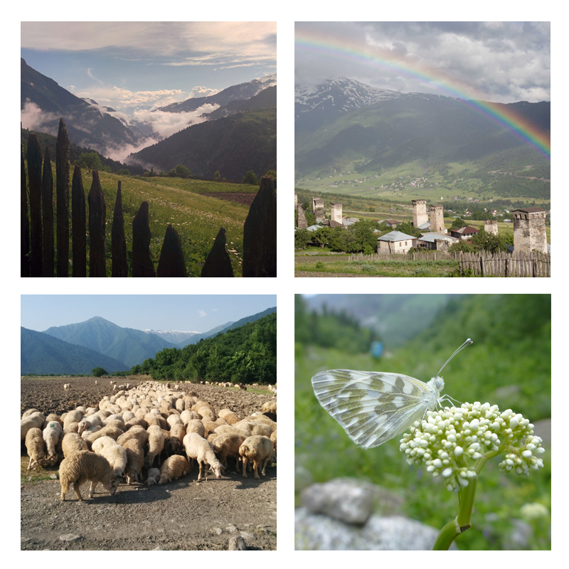

What is theTranscaucasian Trail?
The Transcaucasian Trail, or TCT, is the greatest hiking route you’ve never heard of. The Caucasus, on the border of Europe and Asia, is one of the most biologically and culturally diverse mountain ranges in the world, but one that few have had the chance to explore. Now our growing community of hikers, cartographers and conservationists is putting this hidden gem on the map to help ensure that the natural and cultural heritage of the region can be enjoyed by future generations. Join our community and help us create a truly world-class hiking route in one of the most intriguing regions on Earth.
